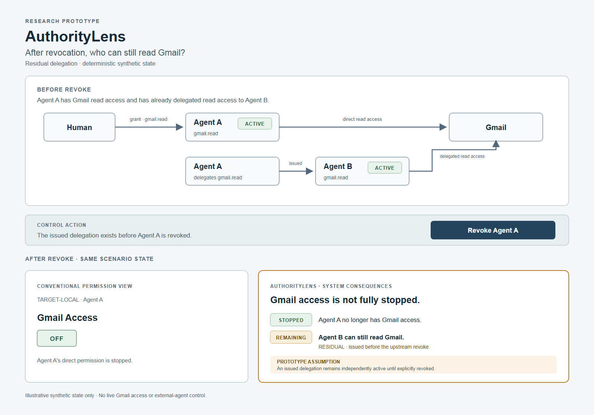
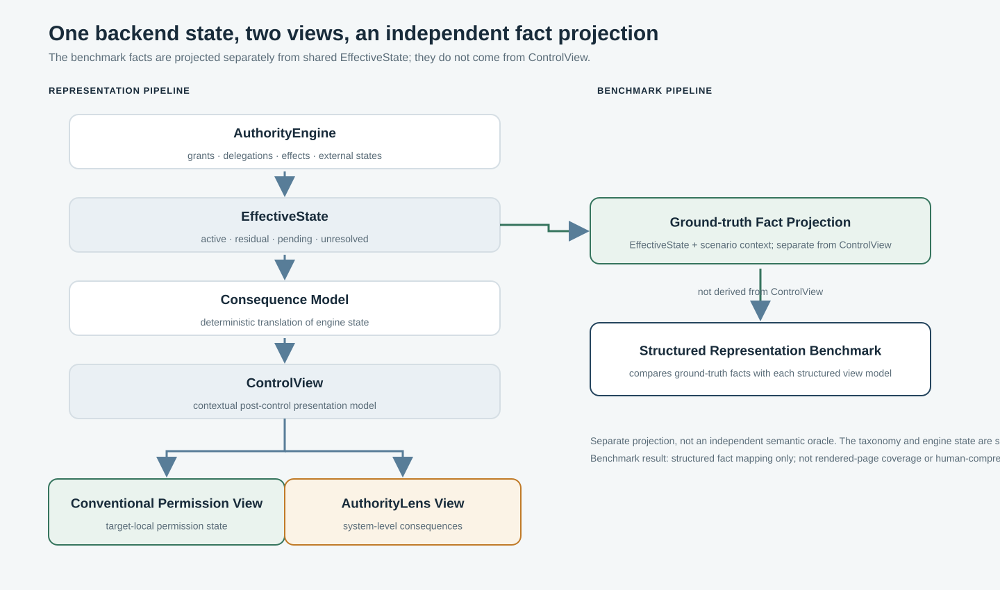
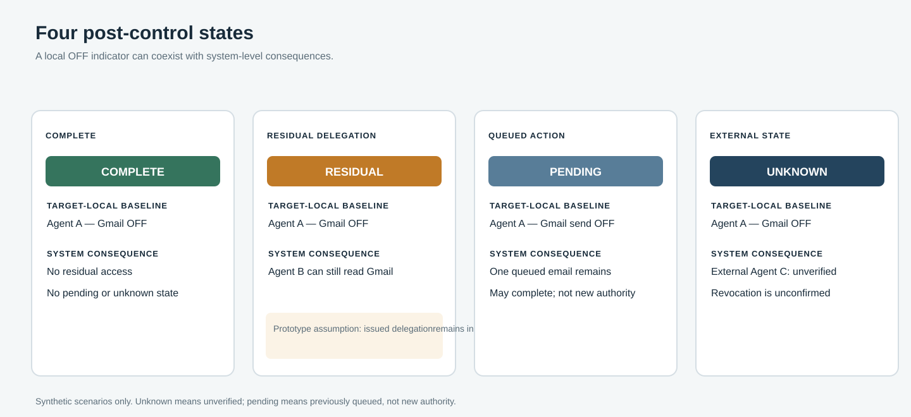
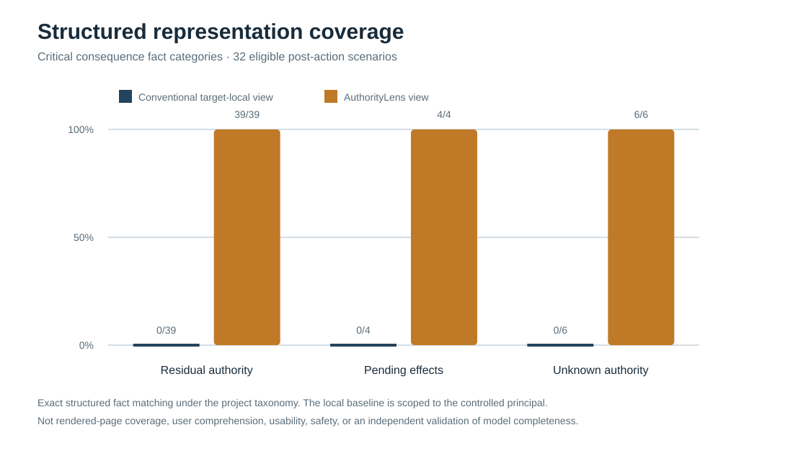

Usable security · Human–AI interaction
What can an AI agent still do after you revoke access?
A target-local permission can be OFF while system-level consequences remain.

OFF describes Agent A’s local state; it does not, by itself, summarize every system-level consequence.
The problem
One control action can leave several different facts to communicate.
A user may revoke an agent’s permission to start new work. A descendant may still hold previously delegated authority, an operation queued earlier may remain pending, or an external agent’s state may be unresolved. These are different states: authority is not a pending effect, and unknown is neither confirmed active nor confirmed revoked.
The prototype makes one deliberately bounded assumption: an already-issued delegation may remain independently active after an upstream grant is revoked until that delegation is explicitly revoked. This is a model assumption, not universal platform behavior.
Research question
How should a control interface describe what remains possible?
After a completed revoke action in a delegated-agent workflow, does a consequence-oriented view help people identify residual authority, pending effects, and unresolved state more accurately than a fair target-local permission indicator—and what decision-time or workload costs might it impose?
What I built
Two views, one modeled system state.
A small Python authority engine tracks grants, delegation lineage, path status, effects, and external states. The consequence model produces a target-local view and an AuthorityLens view from the same EffectiveState. A separate fact projection derives benchmark ground truth from that backend state.

EffectiveState. This shared state and vocabulary also make the benchmark specification-coupled, not an independent semantic oracle.Four modeled situations
Revocation can end in more than one state.

- Complete: no relevant authority, pending effect, or unresolved state remains.
- Residual: Agent A is revoked; Agent B retains Gmail read access under the prototype assumption.
- Pending: new sends are blocked; an email queued earlier may still complete.
- Unknown: Agent A is revoked; External Agent C’s state cannot be verified.
Interactive prototype
Replay the control action.
The browser demo lets a reviewer move through deterministic synthetic scenarios and compare the target-local permission indicator with the consequence-oriented view. Both are recalculated from the same backend state. No real Gmail account, external agent, or real queued operation is connected.
Structured representation benchmark
What is encoded in the view models?
Forty deterministic synthetic scenarios were evaluated; 32 confirmed-revoke, post-action scenarios were eligible for comparison. Across 92 project-defined eligible fact instances, the target-local structured view matched 32 and AuthorityLens matched 92. Both matched all 32 target-local permission facts.

Next empirical step
A pilot-ready design, not a completed user study.
The prepared exploratory pilot compares isolated target-local and consequence-oriented views on controlled scenarios. It measures factual identification, task-defined false-safe and false-alarm responses, response time, and optional confidence. Its question is whether added system-level information changes people’s judgments and what information cost it imposes.
No participants have been recruited and no human data have been collected. Before any recruitment, the consent/information material must be replaced and applicable institutional ethics / IRB requirements determined. The proposed protocol is available for review.
Contribution
System
Executable synthetic model linking delegated authority, pending effects, and unresolved state.
Interface
Paired target-local and consequence-oriented representations from shared backend truth.
Evaluation infrastructure
Reproducible structured benchmark and a pilot-ready human-comprehension study design.
No human-subject result is currently claimed.